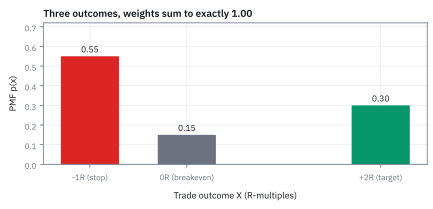
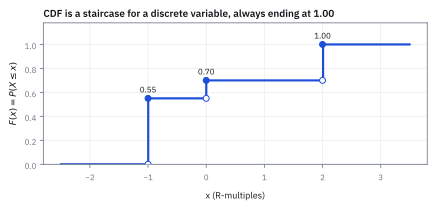
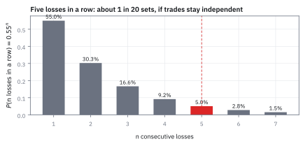
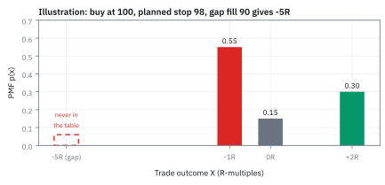
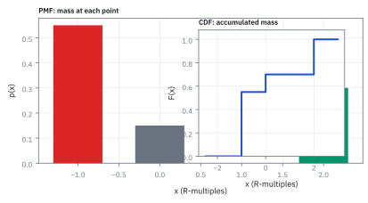

1.2 Discrete Random Variables and the Probability Mass Function (PMF)
แจกน้ำหนักให้ผลลัพธ์แต่ละค่า จนครบ 100% พอดี
กล่องคูปองมี 5 ใบ ส่วนลด \$1 สามใบ \$5 หนึ่งใบ และ \$10 หนึ่งใบ หยิบมาหนึ่งใบ โอกาสได้ส่วนลดอย่างน้อย \$5 เป็นเท่าไร?
เฉลย: 2 ใน 5 หรือ 40% ได้จากนับใบที่ใช่ คือใบ \$5 กับใบ \$10 หารด้วยทั้งหมด 5 ใบ บางคนตอบ 2 ใน 3 เพราะเห็นเลขบนคูปองแค่สามแบบ แต่แบบ \$1 มีถึงสามใบ น้ำหนักจึงไม่เท่ากัน
ตารางที่บอกว่าแต่ละค่ามีน้ำหนักเท่าไร เรียกว่า Probability Mass Function (PMF) หัวข้อนี้ใช้มันกับไม้เทรดจริงหนึ่งไม้
เริ่มจากไม้เทรดหนึ่งไม้
ซื้อหุ้น TSLA 200 หุ้นที่ราคา \$200 ตั้งคำสั่งตัดขาดทุนที่ \$195 จึงยอมเสียหุ้นละ \$5 หรือ \$1,000 ทั้งไม้ เราเรียกเงินที่ยอมเสียนี้ว่า 1R และตั้งคำสั่งขายทำกำไรที่ \$210 ซึ่งได้หุ้นละ \$10 หรือ +2R
ไม้นี้จบได้แค่สามแบบ คือชนจุดตัดขาดทุน ได้ −1R ปิดที่ทุนพอดี ได้ 0R หรือชนเป้ากำไร ได้ +2R ตัวเลขผลลัพธ์ที่เป็นได้แค่ไม่กี่ค่าแยกกันแบบนี้ เรียกว่า discrete random variable
คำถามที่ trader อยากรู้ก่อนกดปุ่มคือ ไม้นี้มีโอกาสขาดทุนเท่าไร และกลยุทธ์นี้คุ้มไหม ทั้งสองคำถามเริ่มจากการแจกน้ำหนักให้สามผลลัพธ์นี้
ศัพท์ที่ใช้ในหัวข้อนี้
- Probability Mass Function (PMF)
- ตารางที่บอกว่าผลลัพธ์แต่ละค่ามีโอกาสเท่าไร น้ำหนักทุกค่ารวมกันต้องได้ 1 พอดี ใช้หาโอกาสของกลุ่มผลลัพธ์ที่สนใจด้วยการบวกน้ำหนัก
- discrete random variable
- ตัวเลขที่ยังไม่รู้ค่าและเป็นได้แค่ค่าที่แยกกันเป็นจุด ๆ เช่นผลลัพธ์ −1R, 0R, +2R ใช้กับสิ่งที่นับได้หรือจบได้ไม่กี่แบบ
- R-multiple
- หน่วยวัดกำไรขาดทุนเทียบกับเงินที่ยอมเสียต่อไม้ เช่นเสี่ยง \$1,000 แล้วได้ \$2,000 คือ +2R ใช้เทียบไม้ที่มีขนาดเงินต่างกันได้
- stop-loss
- คำสั่งขายตัดขาดทุนที่ตั้งไว้ล่วงหน้า ใช้จำกัดความเสียหายเมื่อราคาวิ่งผิดทาง แต่ไม่รับประกันราคาขายเมื่อราคาเปิดกระโดดข้ามจุดที่ตั้ง
- take-profit
- คำสั่งขายเก็บกำไรที่ตั้งไว้ล่วงหน้า ใช้ล็อกกำไรเมื่อราคาถึงเป้า
- breakeven
- การปิดไม้ที่ราคาทุนพอดี ไม่ได้ไม่เสีย ใช้เรียกผลลัพธ์ 0R
- edge
- ความได้เปรียบเฉลี่ยต่อไม้หลังชั่งทั้งโอกาสและขนาดของกำไรขาดทุน ใช้ตัดสินว่ากลยุทธ์ควรเล่นต่อหรือไม่
- gap
- ราคาเปิดวันใหม่กระโดดข้ามระดับที่ตั้งคำสั่งไว้ ทำให้คำสั่งตัดขาดทุนได้ราคาแย่กว่าที่วางแผน ใช้อธิบายว่าทำไมขาดทุนจริงเกิน 1R ได้
- stop-market order
- คำสั่งตัดขาดทุนที่พอแตะราคาแล้วขายทันทีที่ราคาตลาด ใช้เมื่อต้องการออกแน่นอน แต่ราคาที่ได้อาจแย่กว่าที่ตั้ง
- stop-limit order
- คำสั่งตัดขาดทุนที่กำหนดราคาต่ำสุดที่ยอมขาย ใช้คุมราคา แต่เสี่ยงขายไม่ออกเลยถ้าราคาร่วงผ่านไป
- Profit and Loss (P&L)
- กำไรหรือขาดทุนสุทธิของไม้เทรด ใช้วัดผลเป็นดอลลาร์หรือเป็นหน่วย R
- expected value
- ค่าเฉลี่ยของผลลัพธ์ที่ถ่วงด้วยโอกาส ใช้บอกว่าถ้าเล่นซ้ำหลายครั้งจะได้เฉลี่ยต่อครั้งเท่าไร (สร้างเต็มในหัวข้อ 1.3)
- independence
- การที่ผลของไม้หนึ่งไม่เปลี่ยนโอกาสของไม้ถัดไป ใช้เป็นเงื่อนไขที่ทำให้คูณโอกาสของหลายไม้กันได้ตรง ๆ
- backtest
- การลองรันกลยุทธ์กับราคาในอดีต ใช้ประมาณโอกาสของแต่ละผลลัพธ์ก่อนลงเงินจริง
- regime
- ช่วงที่ตลาดมีพฤติกรรมคล้ายกันต่อเนื่อง เช่นช่วงแกว่งแคบหรือช่วงวิกฤต ใช้เตือนว่าโอกาสอาจเปลี่ยนไปทั้งชุดเมื่อตลาดเปลี่ยนช่วง
สัญลักษณ์ที่ใช้ในหัวข้อนี้
| สัญลักษณ์ | ความหมาย | หน่วย |
|---|---|---|
| $X$ | ผลลัพธ์ของหนึ่งไม้เทรด เป็นได้ −1, 0 หรือ +2 | R |
| $x$ | ผลลัพธ์ค่าหนึ่งที่เรากำลังถามถึง | R |
| $p(x)$ | น้ำหนักหรือโอกาสที่ผลลัพธ์จะเป็น $x$ พอดี | 0 ถึง 1 |
| $F(x)$ | โอกาสสะสม $P(X\le x)$ จากหัวข้อ 1.1 | 0 ถึง 1 |
| $t$ | ตัวนับที่ไล่ผ่านผลลัพธ์ทีละค่าในผลบวก | R |
| $R$ | เงินที่ยอมเสียต่อไม้ ในตัวอย่างนี้ 1R = \$1,000 | USD |
ที่มาที่ไป: เกมพนันที่ต้องหยุดกลางคัน
ปี 1654 นักพนันคนหนึ่งถาม Blaise Pascal ว่า ถ้าเกมต้องหยุดกลางคัน จะแบ่งเงินกองกลางอย่างไรให้ยุติธรรม Pascal เขียนจดหมายถกกับ Pierre de Fermat และได้คำตอบที่เปลี่ยนวิธีคิดของทั้งวงการ
แทนที่จะดูว่าใครนำอยู่ ให้ไล่ดูว่าเกมยังจบได้กี่แบบ แต่ละแบบมีโอกาสเท่าไร แล้วแบ่งเงินตามน้ำหนักนั้น การไล่ผลลัพธ์พร้อมน้ำหนักแบบนี้คือ PMF และทุกครั้งที่เราเขียนว่ากลยุทธ์จบได้กี่แบบ เรากำลังทำสิ่งเดียวกับ Pascal
ผลลัพธ์กลายเป็นตัวเลขได้อย่างไร
หลายคนนึกว่า random variable คือตัวเลขลึกลับที่ขยับเองได้ จริง ๆ แล้วมันคือกฎตายตัวที่บอกว่าเหตุการณ์แต่ละแบบแทนด้วยเลขอะไร ‘ชนจุดตัดขาดทุน’ แทนด้วย −1 ‘ปิดที่ทุน’ แทนด้วย 0 ‘ชนเป้ากำไร’ แทนด้วย +2
พอเหตุการณ์กลายเป็นตัวเลข เราก็เอามาบวก ลบ เฉลี่ยได้ ส่วนที่สุ่มจริงคือโลกว่าจะเลือกเหตุการณ์ไหน ไม่ใช่ตัวกฎ
ขั้นที่ 1 — ตารางน้ำหนักของกล่องคูปอง
กลับไปที่กล่องคูปองในตอนต้น เขียนแต่ละค่าส่วนลดพร้อมน้ำหนักของมัน แล้วตอบคำถามด้วยการบวกแถวที่ใช่
น้ำหนักของค่า \$1 คือ 3/5 เพราะมีสามใบจากห้าใบ ไม่ใช่ 1/3 นี่คือจุดที่คำตอบ 2 ใน 3 พลาด มันให้น้ำหนักทุกค่าเท่ากันทั้งที่จำนวนใบไม่เท่ากัน
บรรทัดกลางตรวจว่าน้ำหนักรวมได้ 1 ส่วนบรรทัดสุดท้ายตอบคำถาม: บวกน้ำหนักของแถวที่ส่วนลดอย่างน้อย \$5 ได้ 0.40 ตรงกับที่นับใบด้วยมือ
ขั้นที่ 2 — สองกฎของตารางน้ำหนัก ลองกับลูกเต๋าก่อน
ทอยลูกเต๋าหนึ่งลูก แต่ละหน้ามีน้ำหนัก 1/6 ถามว่า ‘ออกเลขคู่’ มีโอกาสเท่าไร และทำไมน้ำหนักทุกหน้ารวมกันต้องได้ 1
ทำไมบวกน้ำหนักของหน้า 2, 4, 6 ได้ตรง ๆ เพราะลูกเต๋าหนึ่งลูกออกได้ทีละหน้า ไม่มีการทอยครั้งไหนนับเป็นทั้งหน้า 2 และหน้า 4 พร้อมกัน ไม่มีอะไรถูกนับซ้ำ ผลบวกจึงแม่นเป๊ะ ไม่ใช่ค่าประมาณ
ส่วนผลรวมทุกหน้าต้องได้ 1 เพราะถามว่า ‘ออกสักหน้าไหม’ คำตอบคือแน่นอน ถ้ารวมได้ 0.98 แปลว่าอีก 2% หายไปไหนไม่รู้ ทั้งที่ลูกเต๋ามีแค่หกหน้า และน้ำหนักติดลบไม่ได้ เพราะมันคือสัดส่วนของจำนวนครั้ง
ใช้จริงอย่างไร: สองกฎนี้คือเครื่องตรวจว่าเราไล่ผลลัพธ์ครบหรือยัง ผลรวมไม่ถึง 1 คือสัญญาณว่ามีกรณีตกหล่น
โจทย์: ตารางน้ำหนักของไม้ TSLA
| $x$ (R-multiple) | เหตุการณ์ | $p(x)$ | P&L (200 หุ้น, ยอมเสียหุ้นละ \$5) |
|---|---|---|---|
| $-1$ | ชนจุดตัดขาดทุน | 0.55 | −\$1,000 |
| $0$ | ปิดที่ทุน | 0.15 | \$0 |
| $+2$ | ชนเป้ากำไร | 0.30 | +\$2,000 |
โอกาสทั้งสามประมาณจาก backtest ของกลยุทธ์นี้ ตัวเลขเป็นตัวอย่างสำหรับฝึกคิด
ส่วน A — ตารางนี้ใช้ได้ไหม
ของที่มี: ตารางน้ำหนักของไม้ TSLA ด้านบน
ถามว่า ตารางนี้ผ่านสองกฎของขั้นที่ 2 หรือไม่ ลองตรวจเองก่อนดูขั้นถัดไป
ขั้นที่ 3 — ตรวจตาราง TSLA ด้วยสองกฎ
ทั้งสามน้ำหนักเป็นบวกอยู่แล้ว เหลือบวกทุกแถวครั้งเดียวเพื่อดูว่ามีผลลัพธ์ตกหล่นหรือไม่
น้ำหนักทุกตัวมากกว่าศูนย์และรวมได้ 1.00 พอดี ตารางนี้จึงเป็น PMF ที่ใช้ต่อได้ แต่ ‘ผ่านสองกฎ’ ไม่ได้แปลว่าครบทุกความเป็นจริง กับดักท้ายหัวข้อจะชี้ผลลัพธ์ที่ตารางนี้ลืม
แล้วเอาไปใช้ทำอะไรได้จริงบ้าง
อย่างแรก ตั้งราคาสัญญาที่จ่ายเป็นก้อน เช่นสัญญาที่จ่าย \$100 ถ้าไม้นี้ชนเป้ากำไร โอกาส 30% จึงมีมูลค่าเฉลี่ย \$100 คูณ 0.30 เท่ากับ \$30
อย่างที่สอง ตรวจว่าคิดครบหรือยัง ถ้าน้ำหนักรวมได้แค่ 0.90 แปลว่ามีผลลัพธ์ 10% ที่ไม่เคยนับ ซึ่งมักเป็นกรณีที่อันตรายที่สุด
อย่างที่สาม เป็นวัตถุดิบของยอดนับสะสมจากหัวข้อ 1.1 ขั้นที่ 5 จะแสดงว่า Cumulative Distribution Function (CDF) ก็คือการบวกน้ำหนักในตารางนี้ต่อกันไป
Figure 1 — PMF ของผลลัพธ์สามค่า: สามแท่ง รวมกันได้ 1.00 พอดี

ความสูงของแท่งทั้งสามคือโอกาสของแต่ละผลลัพธ์ รวมกันได้ 1.00 พอดี ถ้ามีผลลัพธ์ที่เกิดได้จริงแต่ไม่มีแท่ง model จะประเมินความเสี่ยงผิดทันที
ส่วน B — โอกาสที่ไม้นี้จะไม่ขาดทุน
คำว่า ‘ไม่ขาดทุน’ หมายถึงผลลัพธ์ 0R หรือ +2R เพราะปิดที่ทุนก็ไม่ถือว่าขาดทุน บวกน้ำหนักของสองแถวนี้ แล้วลองตรวจอีกทางด้วยการเอา 1 ลบแถวขาดทุน
ขั้นที่ 4 — รวมแถวที่ไม่ขาดทุนแล้วตรวจกลับ
เหตุการณ์ไม่ขาดทุนมีสองแถว คือปิดที่ทุนกับชนเป้ากำไร
บวกแถว 0R กับ +2R ได้ 0.45 และเอา 1 ลบแถวขาดทุน 0.55 ก็ได้ 0.45 เท่ากัน สองทางตรงกันเพราะสามแถวรวมกันได้ 1 พอดี ไม้นี้จึงไม่ขาดทุน 45% ของเวลา
ส่วน B (ต่อ) — อย่าปนสามอัตรานี้
อัตราชนะคือ 30% อัตราไม่ขาดทุนคือ 45% อัตราโดนตัดขาดทุนคือ 55% หลายคนด่วนสรุปว่ากลยุทธ์ที่แพ้ 55% ต้องขาดทุนแน่ ๆ นั่นคือคำตอบที่ผิด
เพราะถ่วงขนาดด้วยโอกาสแล้วได้ $0.55(-1) + 0.15(0) + 0.30(+2) = +0.05R$ ต่อไม้ ไม้ชนะได้ใหญ่พอชดเชยการแพ้ที่บ่อยกว่า PMF บอกทั้งโอกาสและขนาด ซึ่งหัวข้อ 1.3 จะชั่งรวมกันเป็น expected value
ขั้นที่ 5 — จากตารางน้ำหนักไปเป็นยอดนับสะสม CDF
หัวข้อ 1.1 นับยอดสะสมจากซ้ายไปขวา กับตารางน้ำหนัก ยอดสะสมคือการบวกน้ำหนักของทุกแถวที่ไม่เกินเกณฑ์ ลองไล่จากแถวซ้ายสุด
CDF ของผลลัพธ์แบบจุด ไม่ใช่สูตรใหม่ที่ต้องจำ มันคือการบวกแถวในตารางต่อกันไปจากซ้าย บวกได้ตรง ๆ ด้วยเหตุผลเดียวกับลูกเต๋า คือไม้หนึ่งไม้จบได้แบบเดียว ไม่มีแถวไหนถูกนับซ้ำ
บรรทัดสุดท้ายเขียนเรื่องเดียวกันแบบย่อ: รวม $p(t)$ ทุกแถวที่ $t$ ไม่เกิน $x$ ยอดสะสมต้องจบที่ 1.00 ถ้าไม่จบที่ 1.00 แปลว่ามีแถวตกหล่น และ 1 ลบ $F(-1)$ ได้ 0.45 ตรงกับขั้นที่ 4
ขั้นที่ 6 — ถอยกลับ: น้ำหนักคือความสูงของแต่ละขั้นบันได
ถ้ามีแค่ยอดสะสม จะหาน้ำหนักของแต่ละแถวคืนได้ไหม ได้ แยกยอดสะสมที่ 0R เป็นยอดสะสมถึงแถวก่อนหน้า บวกน้ำหนักของแถวนี้เอง แล้วย้ายข้าง
ภาพที่ช่วยคิด: CDF คือความสูงรวมที่ปีนบันไดมาได้ ส่วน PMF คือความสูงของแต่ละขั้น ความสูงของขั้นหนึ่งหาได้จากความสูงรวมหลังก้าว ลบความสูงรวมก่อนก้าว
บรรทัดแรกบวกได้เพราะไม้ที่จบไม่เกิน −1R กับไม้ที่จบที่ 0R พอดี เป็นไม้คนละแบบกัน ถอดออกมาได้ 0.55, 0.15 และ 0.30 ตรงกับตารางเดิมทุกตัว สำหรับค่าแบบ continuous การลบแบบนี้จะกลายเป็นความชันของ CDF ในหัวข้อ 1.8
Figure 2 — CDF: บันไดสามขั้น

บันไดไต่จาก 0.55 ไป 0.70 แล้วจบที่ 1.00 ความสูงของแต่ละขั้นคือน้ำหนักของผลลัพธ์นั้น วงกลมทึบคือค่าหลังกระโดด เพราะคำว่า ‘ไม่เกิน’ นับจุดนั้นเข้าไปแล้ว
ส่วน C — แพ้ 5 ไม้ติดกันบ่อยแค่ไหน
ถ้าแต่ละไม้ไม่เกี่ยวกัน โอกาสแพ้ 5 ไม้ติดคือเอา 0.55 คูณกันห้าครั้ง แต่ถ้าแพ้แล้วเครียดจนโอกาสแพ้ไม้ถัดไปกลายเป็น 70% โอกาสแพ้ 5 ไม้ติดจะเป็น $0.55 \times 0.70^4 \approx 13.2\%$ มากกว่าสองเท่าของกรณีไม่เกี่ยวกัน
ขั้นที่ 7 — คูณโอกาสห้าไม้แล้วแปลเป็นความถี่
นับจาก 100 ชุดของสองไม้ก่อน ไม้แรกแพ้ราว 55 ชุด ใน 55 ชุดนั้นไม้ที่สองแพ้อีก 55% คือราว 30.25 ชุด การนับนี้คือการคูณ 0.55 กับ 0.55
คูณกันได้เพราะสมมติว่าแต่ละไม้ไม่เกี่ยวกัน โอกาสแพ้ของไม้ที่สองจึงยังเป็น 55% ไม่ว่าไม้แรกจะออกมาอย่างไร การคูณคือการเอาสัดส่วนของสัดส่วนไปเรื่อย ๆ
ยกกำลังห้าทำทีละชั้นเพื่อกดเครื่องคิดเลขตามได้ 5.03% แปลว่าราวหนึ่งชุดในทุก 20 ชุดของห้าไม้ trader ที่เล่นวันละห้าไม้จะเจอวันแพ้รวดแบบนี้ราวเดือนละครั้ง
Worked Example — โจทย์จิ๋วที่คำนวณได้
โจทย์ให้อะไรมาบ้าง: โอกาสแพ้หนึ่งไม้เท่ากับ 0.55 และแต่ละไม้ไม่เกี่ยวกัน ต้องหาโอกาสแพ้ติดกัน 5 ไม้
คำตอบ: $0.55^5=0.050328$ หรือประมาณ 5.03%
ตรวจเองใน 10 วินาที: คำตอบต้องเล็กกว่า 0.55 และเล็กกว่า 0.55 ยกกำลังสองคือ 0.3025 เพราะแพ้หลายไม้ติดยากกว่าแพ้ไม้เดียว
แปลว่าอะไร: ราวหนึ่งชุดในทุก 20 ชุดของห้าไม้ กับดักคือใช้การยกกำลังนี้ในช่วงที่ตลาดอยู่ใน regime เดียวกันต่อเนื่อง ซึ่งผลของแต่ละไม้เกี่ยวกันจริง
ลองทำเอง — กลยุทธ์ที่สองที่ดูปลอดภัยกว่า
ของที่มี: อีกกลยุทธ์หนึ่งจบได้สามแบบ ขาดทุน 1R โอกาส 0.40 ปิดที่ทุน โอกาส 0.20 และกำไร 1R โอกาส 0.40
ถามว่า ตารางนี้ผ่านสองกฎไหม โอกาสไม่ขาดทุนเท่าไร และแพ้ 5 ไม้ติดบ่อยแค่ไหน
คำตอบ: น้ำหนักรวม 0.40 + 0.20 + 0.40 = 1 ผ่าน โอกาสไม่ขาดทุนคือ 0.20 + 0.40 = 0.60 และแพ้ 5 ไม้ติดคือ 0.40 ยกกำลัง 5 ได้ 0.01024 หรือราว 1%
ตรวจเองใน 10 วินาที: 0.4 คูณ 0.4 ได้ 0.16 คูณอีกสามครั้งได้ 0.064, 0.0256, 0.01024 คำตอบต้องเล็กกว่าของไม้ TSLA ที่แพ้บ่อยกว่า
แปลว่าอะไร: กลยุทธ์นี้แพ้รวดน้อยกว่ามาก แต่ถ่วงขนาดแล้วได้เฉลี่ย 0.40(−1) + 0.40(+1) = 0 ต่อไม้ คือไม่มี edge เลย ปลอดภัยกว่าไม่ได้แปลว่าดีกว่า
Figure 3 — โอกาสแพ้ n ไม้รวดร่วงแบบ exponential

ทุกไม้ที่เพิ่มขึ้นคูณโอกาสด้วย 0.55 อีกครั้ง เส้นจึงร่วงเร็ว แต่เส้นนี้ถูกเฉพาะเมื่อแต่ละไม้ไม่เกี่ยวกัน ถ้าแพ้แล้วมีแนวโน้มแพ้ซ้ำ ของจริงจะอยู่สูงกว่าเส้นนี้
กับดัก: ตารางไม่เตือนเรื่องแถวที่ไม่มีอยู่
ตารางบอกว่าเสียมากที่สุด 1R แต่ของจริงเสียเกินได้ ตัวเลขสมมติ: ซื้อที่ \$100 ตั้ง stop-market order ที่ \$98 จึงยอมเสียหุ้นละ \$2 ข้ามคืนมีข่าวร้าย ราคาเปิดที่ \$90 คำสั่งขายได้ที่ \$90 เสียหุ้นละ \$10 หรือ 10 ส่วน 2 เท่ากับ 5R
stop-limit order กันราคาแย่แบบนี้ได้ แต่แลกกับความเสี่ยงที่จะขายไม่ออกเลย แถว −5R ไม่มีอยู่ในตารางเดิม เพราะเราไม่ได้ใส่เหตุการณ์ gap ลงไป PMF สะท้อนแค่สิ่งที่เราเขียนลงไปเท่านั้น
ข้อจำกัด: วิธีนี้สมมติอะไร และของจริงเป็นอย่างไร
| เรื่อง | วิธีนี้สมมติว่า | ของจริงเป็นอย่างไร | ผลที่ตามมาเวลาใช้งาน |
|---|---|---|---|
| จำนวนผลลัพธ์ | ผลลัพธ์มีไม่กี่แบบและรู้ครบ | มีกรณีที่ไม่เคยคิดถึงเสมอ | ตารางที่ดูครบอาจขาดกรณีที่ทำให้เจ๊งจริง |
| โอกาสที่ใส่ | รู้โอกาสของแต่ละผลลัพธ์แน่นอน | เราประมาณจาก backtest ที่มีข้อมูลจำกัด | คำตอบแม่นได้ไม่เกินความแม่นของโอกาสที่ใส่ |
| ความคงที่ | โอกาสไม่เปลี่ยนระหว่างทาง | อัตราชนะเสื่อมลงเมื่อคนรู้กลยุทธ์มากขึ้น | ตัวเลขจาก backtest มักสวยกว่าที่ได้จริง |
สองแถวล่างคือเหตุผลที่หัวข้อ 14.3 พูดเรื่องความคลาดเคลื่อนของค่าที่ประมาณมา และหัวข้อ 15.7 พูดเรื่องสัญญาณที่จางลงตามเวลา
Figure 4 — แท่งผี ณ -5R ที่ไม่เคยอยู่ในตาราง

กรอบเส้นประคือขาดทุนจาก gap ที่ราคาเปิดกระโดดข้ามจุดตัดขาดทุน แท่งนี้ไม่อยู่ใน PMF เดิม เพราะตารางสะท้อนแค่สิ่งที่เราเขียนลงไป
Figure 5 — PMF side-by-side with its CDF

ซ้ายคือ PMF ที่บอกน้ำหนักทีละจุด ขวาคือ CDF ที่บวกน้ำหนักเหล่านั้นสะสมจากซ้ายไปขวาจนจบที่ 1.00 ข้อมูลชุดเดียวกัน มองสองแบบ
สรุปที่ใช้ได้จริง
- PMF คือตารางน้ำหนัก ต้องผ่านสองกฎ: น้ำหนักไม่ติดลบ และรวมกันได้ 1 พอดี ผลรวมไม่ถึง 1 คือสัญญาณว่านับผลลัพธ์ไม่ครบ
- โอกาสของกลุ่มผลลัพธ์คือผลบวกน้ำหนักของแถวที่เข้ากลุ่ม บวกตรง ๆ ได้เพราะผลลัพธ์หนึ่งครั้งเป็นได้แค่แถวเดียว
- อัตราชนะ 30% อัตราไม่ขาดทุน 45% และอัตราโดนตัดขาดทุน 55% เป็นคนละตัวเลข และแพ้บ่อยก็ยังได้กำไรเฉลี่ย +0.05R ได้
- CDF คือน้ำหนักที่บวกสะสมจากซ้าย และน้ำหนักแต่ละแถวคือความสูงของแต่ละขั้นบันไดของ CDF
- คูณโอกาสของหลายไม้ได้เฉพาะเมื่อแต่ละไม้ไม่เกี่ยวกัน เช่น $0.55^5\approx5.03\%$ และความเสี่ยงที่แรงที่สุดมักเป็นแถวที่ไม่มีในตาราง เช่นขาดทุนจาก gap